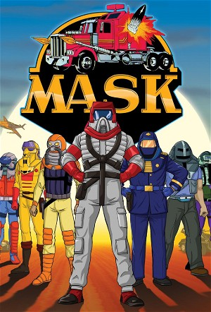

M.A.S.K. (1985)
ActionAdventureAnimationChildrenFamilyScience Fiction
| Year | 1985 |
|---|---|
| Rating | TV-Y7 |
| Status | Completed |
| Seasons | 3 |
| Episodes | 77 |
| Genre | Action, Adventure, Animation, Children, Family, Science Fiction |
After the death of his teenage brother Andy, multi-millionaire Matt Trakker uncovers an international criminal organization known as V.E.N.O.M. (Vicious Evil Network Of Mayhem) Trakker gathers a group of friends who, like himself, possess extraordinary talents and creates M.A.S.K. (Mobile Armoured Strike Kommand) Their objective; to destroy V.E.N.O.M. and its mastermind - Miles Mayhem, who is responsible for Andy's death
Episodes
Specials
| # | Title | Air Date | Synopsis |
|---|---|---|---|
| 1 | Unmasking M.A.S.K. - The Writers Of M.A.S.K. | — | |
| 2 | Saturday Morning Crusaders - The Fans Of M.A.S.K. | — |
Season 1
Led by billionaire Matt Trakker, a covert team of heroes in transforming vehicles and powered helmets—the “masks”—battles the criminal syndicate V.E.N.O.M. Their missions span high-stakes heists, stolen artifacts, and global sabotage, showcasing strategic battles and high-tech heroism in a world where masks literally pack a punch.
| # | Title | Air Date | Synopsis |
|---|---|---|---|
| 1 | The Deathstone | 1985-09-30 | V.E.N.O.M. steals a strange meteorite with healing powers using Switchblade disguised as a UFO. |
| 2 | The Star Chariot | 1985-10-01 | V.E.N.O.M. steals a mystical arrowhead rumored to point the way to an alien spacecraft buried in the desert. |
| 3 | The Book of Power | 1985-10-02 | V.E.N.O.M. steals an ancient book which holds the secrets of a mythological city of riches. |
| 4 | Highway to Terror | 1985-10-03 | M.A.S.K. tries to retrieve a stash of military plutonium that V.E.N.O.M. plans to use to power an earthquake machine. |
| 5 | Video V.E.N.O.M. | 1985-10-04 | V.E.N.O.M. hypnotizes innocent people through their television sets to hijack a powerful laser cannon and threatens to use it to attack a Texas oil refinery if not paid a hefty ransom. |
| 6 | Dinosaur Boy | 1985-10-07 | V.E.N.O.M. abducts a strange lizard creature whose antibodies can prolong human life. |
| 7 | The Ultimate Weapon | 1985-10-08 | V.E.N.O.M. obtains a device that jams the control systems of the M.A.S.K. vehicles, rendering their opposition immobile. |
| 8 | The Roteks | 1985-10-09 | V.E.N.O.M. steals a swarm of metal-eating bugs secretly developed by the military. |
| 9 | The Oz Effect | 1985-10-10 | V.E.N.O.M. uses a strange vortex machine to abduct a village of Australian aborigines and forces them as slaves to mine valuable crystal. |
| 10 | Death from the Sky | 1985-10-11 | V.E.N.O.M. uses a tractor beam to steer a meteor to Earth which threatens to destroy a major city. |
| 11 | The Magma Mole | 1985-10-14 | V.E.N.O.M. uses a mole machine to drill into the Earth which threatens Tokyo with devastating floods and an eruption of Mount Fuji. |
| 12 | Solaria Park | 1985-10-15 | V.E.N.O.M. hides a heat ray weapon in an amusement park. |
| 13 | The Creeping Terror | 1985-10-16 | V.E.N.O.M. unleashes a horde of giant caterpillars to destroy a South American jungle in hopes of finding a lost Mayan temple. |
| 14 | Assault on Liberty | 1985-10-17 | V.E.N.O.M. steals the Statue of Liberty during a magic show and holds it for ransom. |
| 15 | The Sceptre of Rajim | 1985-10-18 | V.E.N.O.M. steals a mystical scepter from an Indian city whose inhabitants hold the M.A.S.K. team hostage until its return. Matt Trakker must work alone to get it back. |
| 16 | The Golden Goddess | 1985-10-21 | V.E.N.O.M. steals golden relics from ancient temples in Singapore, using a special gas that liquefies gold and smuggling it by pumping it secretly through a pipeline. |
| 17 | Mystery of the Rings | 1985-10-22 | V.E.N.O.M. goes to Sunhenge with three mystic rings that will point the way to a wealth of ancient treasure. |
| 18 | Bad Vibrations | 1985-10-23 | V.E.N.O.M. threatens to destroys buildings in Hong Kong with a sonic weapon. |
| 19 | Ghost Bomb | 1985-10-24 | V.E.N.O.M. plots to destroy the Panama Canal with a captured nuclear submarine. |
| 20 | Cold Fever | 1985-10-25 | During a trip to Alaska, Bruce Sato falls ill from a terrible virus and M.A.S.K. finds that V.E.N.O.M. has the only cure. |
| 21 | Mardi Gras Mystery | 1985-10-28 | The M.A.S.K. team enjoys a New Orleans Mardi Gras but finds V.E.N.O.M. there trying to steal the formula to a super-fuel. |
| 22 | The Secret of Life | 1985-10-29 | V.E.N.O.M. steals an Ancient Egyptian tablet from King Tut's tomb which may contain "the secret of life." |
| 23 | Vanishing Point | 1985-10-30 | V.E.N.O.M. hijacks planes by setting up a fake airport, jamming radars and confusing pilots to land there, in order to capture an experimental supersonic jet. |
| 24 | Counter-Clockwise Caper | 1985-10-31 | V.E.N.O.M. conducts heists of Las Vegas casinos.. |
| 25 | The Plant Show | 1985-11-01 | V.E.N.O.M. threatens to cover Los Angeles with mutated kudzu vines unless California pays a hefty ransom. |
| 26 | Secret of the Andes | 1985-11-04 | M.A.S.K. must protect a revived Incan priest, who has been frozen in ice found in the Andes, from V.E.N.O.M., who may know the secret location of El Dorado. |
| 27 | Panda Power | 1985-11-05 | V.E.N.O.M. abducts endangered panda bears from China, and M.A.S.K. must rescue them. |
| 28 | Blackout | 1985-11-06 | V.E.N.O.M. has a new vehicle called Blackout, which is capable of draining power supplies. |
| 29 | A Matter of Gravity | 1985-11-07 | Firecracker is destroyed in a battle with V.E.N.O.M., and Hondo gets a new replacement vehicle, Hurricane, in the end. (NOTE: Hurricane was called Nightstalker in this episode). |
| 30 | The Lost Riches of Rio | 1985-11-08 | V.E.N.O.M. steals a worthless painting, but M.A.S.K. learns it really contains a secret map to lost Nazi treasure. |
| 31 | Deadly Blue Slime | 1985-11-11 | M.A.S.K. goes to Africa to stop a botched experiment which has created a deadly blue slime that consumes everything in its path. |
| 32 | The Currency Conspiracy | 1985-11-12 | In the Swiss Alps, M.A.S.K. must stop V.E.N.O.M. from using an organism that eats the ink off printed money rendering the bills worthless at the behest of a corrupt finance minister. |
| 33 | Caesar's Sword | 1985-11-13 | V.E.N.O.M. agent Sly Rax, poses as the ghost of Julius Caesar to scare off a team of archaeologists who have uncovered Caesar's Sword of Victory. |
| 34 | Peril in Paris | 1985-11-14 | Buddie Hawks disguises himself as V.E.N.O.M. agent Dagger in order to infiltrate their secret base in Paris. There he uncovers the V.E.N.O.M. plan to find a Nazi doomsday machine. |
| 35 | In Dutch | 1985-11-15 | A madman hires V.E.N.O.M. to destroy the flood dikes in the Netherlands if their parliament doesn't allow him a political position. |
| 36 | The Lipizzaner Mystery | 1985-11-18 | V.E.N.O.M. steals the famous Lipizzaner Stallions where an Arab purchases them for $4 million, but M.A.S.K. team member Dusty Hayes foils their heist. |
| 37 | The Sacred Rock | 1985-11-19 | V.E.N.O.M. frightens a tribe of Australian aborigines who believe their god "Mimi" is angry with them. When T-Bob makes an appearance, the tribe thinks he is their deity. |
| 38 | Curse of Solomon's Gorge | 1985-11-20 | M.A.S.K. goes to Africa to stop V.E.N.O.M., who has discovered King Solomon's treasures. |
| 39 | Green Nightmare | 1985-11-21 | V.E.N.O.M. agent Vanessa Warfield sabotages Matt Trakker's private jet which crashes in the jungles of New Guinea, while returning a priceless gem his father was entrusted with. The rest of the M.A.S.K. team goes to resc |
| 40 | Eyes of the Skull | 1985-11-22 | V.E.N.O.M. leader, Miles Mayhem, uses an ancient "crystal skull" which allows x-ray like vision to see through Matt Trakker's mask and discover his identity. Mayhem then kidnaps Scott Trakker for ransom. |
| 41 | Stop Motion | 1985-11-25 | V.E.N.O.M. obtains an EMP bomb and threatens to loot bank vaults across the country by knocking out all electronics for miles around. |
| 42 | The Artemis Enigma | 1985-11-26 | V.E.N.O.M. plans to steal a sacred horn from a group of monks that is rumored to detect gold. |
| 43 | The Chinese Scorpion | 1985-11-27 | V.E.N.O.M. agent Bruno Sheppard disguises Stinger as a giant iron scorpion and kidnaps an archaeologist who knows the location of buried treasure inside the Great Wall of China. |
| 44 | Riddle of the Raven Master | 1985-11-28 | V.E.N.O.M. agent Vanessa Warfield uses trained ravens to steal London's crown jewels. As a diversion, Sly Rax plants a bomb in Big Ben. Scott and T-Bob meet the Ravens of the Tower of London. |
| 45 | The Spectre of Captain Kidd | 1985-11-29 | M.A.S.K. must foil a plot by V.E.N.O.M. to get their hands on the lost booty of the pirate Captain Kidd. |
| 46 | The Secret of the Stones | 1985-12-02 | V.E.N.O.M. steals a strange stone that makes objects weightless. |
| 47 | The Lost Fleet | 1985-12-03 | M.A.S.K. tries to stop V.E.N.O.M., who goes to Iceland in search of a legendary "golden" fleet. |
| 48 | Quest of the Canyon | 1985-12-04 | M.A.S.K. goes to Carlsbad Caverns, where V.E.N.O.M. plans to steal the lost treasure of legendary gunman Jesse James. |
| 49 | Follow the Rainbow | 1985-12-05 | V.E.N.O.M. goes to Ireland to find the treasure of Brian Boru at the end of the rainbow. |
| 50 | The Everglades Oddity | 1985-12-06 | While Matt Trakker recovers from being bitten by a venomous snake, Alex Sector must lead the M.A.S.K. team to stop a V.E.N.O.M. plan to steal the NASA space shuttle. |
| 51 | Dragonfire | 1985-12-09 | V.E.N.O.M. goes to Borneo to seek a lost temple. When they find it, they unleash the temple's lizard guardians against M.A.S.K. |
| 52 | The Royal Cape Caper | 1985-12-10 | V.E.N.O.M. steals Kamehameha's cape and helmet, then mass produce replicas selling them as expensive fakes. |
| 53 | Patchwork Puzzle | 1985-12-11 | V.E.N.O.M. steals a Civil War-era quilt that contains a secret message to finding buried treasure near the Washington Monument in Washington D.C. |
| 54 | Fog on Boulder Hill | 1985-12-12 | V.E.N.O.M. kidnaps an old woman who is unknowingly hiding $20 bill printing plates. V.E.N.O.M. wants the plates so they can make counterfeit money. |
| 55 | Plunder of Glowworm Grotto | 1985-12-13 | M.A.S.K. member Julio Lopez goes to New Zealand to help a local tribe preserve their land. There he discovers a V.E.N.O.M. plot to steal pearls from giant clams that live in the ocean. |
| 56 | Stone Trees | 1985-12-16 | M.A.S.K. member Jacques LaFleur finds a stone tree inscribed with strange symbols. V.E.N.O.M. later steals the tree hoping it will lead them to a golden Indian totem. |
| 57 | Incident in Istanbul | 1985-12-17 | V.E.N.O.M. hijacks an armored car in Istanbul stealing Constantine's chess set, which contains secrets to finding his golden crown. |
| 58 | The Creeping Desert | 1985-12-18 | A corrupt landowner hires V.E.N.O.M. to destroy land in Acapulco, Mexico, rendering them worthless patches of desert so he can buy it up real cheap and restore the land later with an advanced hydration machine. |
| 59 | The Scarlet Empress | 1985-12-19 | M.A.S.K. member Calhoun Burns accidentally shrinks a priceless statue V.E.N.O.M. is trying to steal. A curious bird makes off with the statue. |
| 60 | Venice Menace | 1985-12-20 | V.E.N.O.M. has a special chemical that turns the waters around Venice to jelly, allowing Stinger to drive on the surface and dig up Cleopatra's sunken barge. |
| 61 | Treasure of the Nazca Plain | 1985-12-23 | M.A.S.K. foils a plot by V.E.N.O.M. to steal a prehistoric South American treasure. |
| 62 | Disappearing Act | 1985-12-24 | V.E.N.O.M. steals priceless automobiles by shrinking them with a shrink ray. |
| 63 | Gate of Darkness | 1985-12-25 | V.E.N.O.M. abducts a cobra whose hood shows the way through a maze that leads to treasure in the Himalayan Mountains. |
| 64 | The Manakara Giant | 1985-12-26 | V.E.N.O.M. uses a magnetic weapon to crash ships into rocky beaches. Local natives believe it is caused by an ancient curse until M.A.S.K. discovers otherwise. |
| 65 | Raiders of the Orient Express | 1985-12-26 | V.E.N.O.M. infiltrates the Orient Express train looking for clues to "Mad" King Ludwig's treasures. |
Season 2
Switching gears, the conflict ramps up on a global racing circuit. M.A.S.K. and V.E.N.O.M. face off in retrofitted vehicles and high-octane contests with stakes beyond the finish line—like rare artifacts and powerful prizes—injecting speed, sabotage, and supercharged danger into the franchise.
| # | Title | Air Date | Synopsis |
|---|---|---|---|
| 1 | Demolition Duel to the Death | 1986-09-09 | During a harrowing demolition derby, V.E.N.O.M. agents discover one of their own, a new V.E.N.O.M. recruit named Boris Bushkin, is really a M.A.S.K. double agent who foils their plans to eliminate M.A.S.K. member Buddie |
| 2 | Where Eagles Dare | 1986-10-01 | Matt Trakker takes on the Mayhem brothers in a race that will win the victor a profitable transportation licence. |
| 3 | Homeward Bound | 1986-10-08 | M.A.S.K. member Ali Bombay returns to his homelands in India but finds that V.E.N.O.M. is using villagers as slaves to mine a valuable meteorite. |
| 4 | The Battle of the Giants | 1986-10-15 | Matt Trakker and the Mayhem brothers race to win a trophy that contains a secret formula, but the Mayhem twins, of course, play dirty in order to win the prize. |
| 5 | Race Against Time | 1986-10-22 | Brad Turner undertakes a mission to retrieve a rare plant needed to fight a spreading virus, but he soon finds V.E.N.O.M. is after the plant as well. |
| 6 | Challenge of the Masters | 1986-10-29 | M.A.S.K. and V.E.N.O.M. battle in a race to win a trophy containing a microfilm that has secret access codes to any computer in the world. |
| 7 | For One Shining Moment | 1986-11-05 | V.E.N.O.M. surprisingly shows kindness by organizing a race for "charity", luring M.A.S.K. to participate, however the race is really a trap to eliminate M.A.S.K. once and for all. |
| 8 | High Noon | 1986-11-12 | M.A.S.K. and V.E.N.O.M. enter a land, air and sea race to show off their vehicle capabilities. V.E.N.O.M. uses the race as a diversion to steal plans for a top secret jet. |
| 9 | The Battle for Baja | 1986-11-19 | M.A.S.K. enters a Baja race where the Mexican President's son, Raul Vega, is also a competitor and offered to drive Goliath I by Matt Trakker. V.E.N.O.M. uses the opportunity to kidnap Vega for ransom. |
| 10 | Cliff Hanger | 1986-11-26 | V.E.N.O.M. gets their hands on dangerous seeds that can cause a plague and MASK races to stop them. |